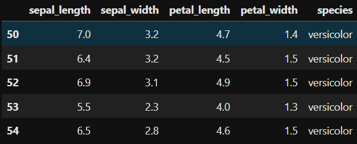
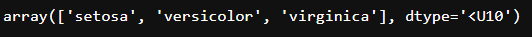
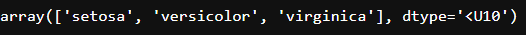
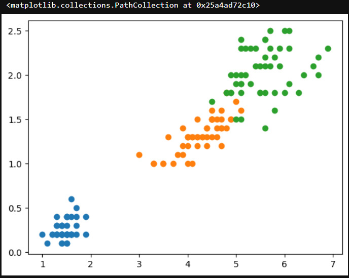

‣What is Supervised Learning?
Supervised Machine Learning is where you have input variables (x) and an output variable (Y) and you use an algorithm to learn the mapping function from the input to the output Y = f(X). The goal is to approximate the mapping function so well that when you have new input data (x) you can predict the output variables (Y) for that data.
Supervised learning problems can be further grouped into Regression and Classification problems.
- Regression: Regression algorithms are used to predict a continuous numerical output. For example, a regression algorithm could be used to predict the price of a house based on its size, location, and other features.
- Classification: Classification algorithms are used to predict a categorical output. For example, a classification algorithm could be used to predict whether an email is spam or not.
‣Classification Types
There are two main classification types in machine learning:
‣Binary Classification
In binary classification, the goal is to classify the input into one of two classes or categories. Example – On the basis of the given health conditions of a person, we have to determine whether the person has a certain disease or not.
‣Multiclass Classification
In multi-class classification, the goal is to classify the input into one of several classes or categories. For Example – On the basis of data about different species of flowers, we have to determine which specie our observation belongs to.
‣Classification Algorithms
There are various types of classifiers algorithms. Some of them are :
‣Linear Classifiers
Linear models create a linear decision boundary between classes. They are simple and computationally efficient. Some of the linear classification models are as follows:
-
Logistic Regression:
Logistic regression is a supervised machine learning algorithm used for classification tasks where the goal is to predict the probability that an instance belongs to a given class or not. Logistic regression is a statistical algorithm which analyze the relationship between two data factors. The article explores the fundamentals of logistic regression, it’s types and implementations.
What is Logistic Regression?
Logistic regression is used for binary classification where we use sigmoid function, that takes input as independent variables and produces a probability value between 0 and 1. For example, we have two classes Class 0 and Class 1 if the value of the logistic function for an input is greater than 0.5 (threshold value) then it belongs to Class 1 otherwise it belongs to Class 0. It’s referred to as regression because it is the extension of linear regression but is mainly used for classification problems.How does Logistic Regression works?
The logistic regression model transforms the linear regression function continuous value output into categorical value output using a sigmoid function, which maps any real-valued set of independent variables input into a value between 0 and 1. This function is known as the logistic function.
Let the independent input features be:x1,x2,x3..,xn
and the dependent variable is Y having only binary value i.e. 0 or 1.
Y = 0 if class1
Y = 1 if class2then, apply the multi-linear function to the input variables X.
z=(∑wixi)+b
Here xi is is the ith observation of X,wi=(w1,w2,w3..,wm) is the weights or Coefficient, and b is the bias term also known as intercept. simply this can be represented as the dot product of weight and bias.
z=w.x+b
Sigmoid Function
Now we use the sigmoid function where the input will be z and we find the probability between 0 and 1. i.e. predicted y.
Stochastic Gradient Descent (SGD) Classifier
Code Snippet:
# Example of Logistic Regression in Python
import seaborn as sns
import pandas as pd
import numpy as np
df = sns.load_dataset('iris')
df.head()
df.isnull().sum()

df = df[df['species'] != 'setosa']
df.head()

df['species'] = df['species'].map({'versicolor':0,'virginica':1})
df.head()
X = df.iloc[:,:-1]
y = df.iloc[:,-1]
X
y
from sklearn.model_selection import train_test_split
X_train, X_test, y_train, y_test = train_test_split(X,y,test_size=0.2,random_state=42)
from sklearn.linear_model import LogisticRegression
classifier = LogisticRegression()
'''The GridSearchCV is used to find the perfect fitting parameter for a test'''
from sklearn.model_selection import GridSearchCV
parameter = {'penalty':['l1','l2','elasticnet'],'C':[1,2,3,4,5,6,10,20,30,40,50],'max_iter':[100,200,300]}
classifier_regressor = GridSearchCV(classifier,param_grid=parameter,scoring='accuracy',cv=5)
classifier_regressor.fit(X_train,y_train)
print(classifier_regressor.best_params_)
print(classifier_regressor.best_score_)

y_pred = classifier_regressor.predict(X_test)
# Accuracy score
from sklearn.metrics import accuracy_score,classification_report
score = accuracy_score(y_pred,y_test)
print(score)
print(classification_report(y_pred,y_test))
‣Non-linear Classifiers
Non-linear models create a non-linear decision boundary between classes. They can capture more complex relationships between the input features and the target variable. Some of the non-linear classification models are as follows:
-
K-Nearest Neighbor(KNN) Algorithm:
The K-Nearest Neighbors (KNN) algorithm is a supervised machine learning method employed to tackle classification and regression problems. Evelyn Fix and Joseph Hodges developed this algorithm in 1951, which was subsequently expanded by Thomas Cover. The article explores the fundamentals, workings, and implementation of the KNN algorithm.
What is the K-Nearest Neighbors Algorithm?
KNN is one of the most basic yet essential classification algorithms in machine learning. It belongs to the supervised learning domain and finds intense application in pattern recognition, data mining, and intrusion detection.
It is widely disposable in real-life scenarios since it is non-parametric, meaning it does not make any underlying assumptions about the distribution of data (as opposed to other algorithms such as GMM, which assume a Gaussian distribution of the given data). We are given some prior data (also called training data), which classifies coordinates into groups identified by an attribute.How does KNN works?
Thе K-Nearest Neighbors (KNN) algorithm operates on the principle of similarity, where it predicts the label or value of a new data point by considering the labels or values of its K nearest neighbors in the training dataset.
.png)
Step-by-Step explanation of how KNN works is discussed below:
Step 1: Selecting the optimal value of K
Step 2: Calculating distance
Step 3: Finding Nearest Neighbors
Step 4: Voting for Classification or Taking Average for Regression
Code Snippet
# Example of Logistic Regression in Python import pandas as pd from sklearn.datasets import load_iris iris = load_iris() iris.feature_names
iris.target_names

df = pd.DataFrame(iris.data,columns=iris.feature_names) df.head()
df['target'] = iris.target df.head()
df0 = df[:50] df1 = df[50:100] df2 = df[100:] import matplotlib.pyplot as plt plt.xlabel('Sepal Length') plt.ylabel('Sepal Width') plt.scatter(df0['sepal length (cm)'],df0['sepal width (cm)'],color='green',marker='.') plt.scatter(df1['sepal length (cm)'],df1['sepal width (cm)'],color='blue',marker='.')
plt.xlabel('Petal Length') plt.ylabel('Petal Width') plt.scatter(df0['petal length (cm)'],df0['petal width (cm)'],color='green',marker='.') plt.scatter(df1['petal length (cm)'],df1['petal width (cm)'],color='blue',marker='.')
from sklearn.model_selection import train_test_split X = df[['sepal length (cm)','sepal width (cm)','petal length (cm)','petal width (cm)']] y = df['target'] X_train, X_test, y_train, y_test = train_test_split(X,y,test_size=0.2,random_state=1) len(X_train) len(X_test)
from sklearn.neighbors import KNeighborsClassifier knn = KNeighborsClassifier(n_neighbors=3) #n_neighbour is K knn.fit(X_train,y_train)
from sklearn.metrics import confusion_matrix y_pred = knn.predict(X_test) confusion_matrix(y_test,y_pred)
-
Support Vector Machine (SVM) Algorithm:
Kernel Function is a method used to take data as input and transform it into the required form of processing data. “Kernel” is used due to a set of mathematical functions used in Support Vector Machine providing the window to manipulate the data. So, Kernel Function generally transforms the training set of data so that a non-linear decision surface is able to transform to a linear equation in a higher number of dimension spaces. Basically, It returns the inner product between two points in a standard feature dimension.
Standard Kernel Function Equation :
Code Snippet
# Example of SVM in Python import pandas as pd from sklearn.datasets import load_iris iris = load_iris() iris.feature_names
iris.target_names

df = pd.DataFrame(iris.data, columns=iris.feature_names) df.head()
df['target'] = iris.target df.head()
import matplotlib.pyplot as plt df0 = df[df.target==0] #setosa df1 = df[df.target==1] #versicolor df2 = df[df.target==2] #virginica plt.scatter(df0['sepal length (cm)'],df0['sepal width (cm)']) plt.scatter(df1['sepal length (cm)'],df1['sepal width (cm)']) plt.scatter(df2['sepal length (cm)'],df2['sepal width (cm)'])
plt.scatter(df0['petal length (cm)'],df0['petal width (cm)']) plt.scatter(df1['petal length (cm)'],df1['petal width (cm)']) plt.scatter(df2['petal length (cm)'],df2['petal width (cm)'])

from sklearn.model_selection import train_test_split X_train, X_test, y_train, y_test = train_test_split(df.drop(['target'],axis='columns'),df.target,test_size=0.2) from sklearn.svm import SVC model = SVC() model.fit(X_train,y_train)

model.score(X_test,y_test) 1.0 y_pred = model.predict(X_test) from sklearn.metrics import confusion_matrix confusion_matrix(y_test,y_pred)
from sklearn.metrics import accuracy_score accuracy_score(y_test,y_pred)
-
Naive Bayes Classifiers Algorithm:
A Naive Bayes classifiers, a family of algorithms based on Bayes’ Theorem. Despite the “naive” assumption of feature independence, these classifiers are widely utilized for their simplicity and efficiency in machine learning. The article delves into theory, implementation, and applications, shedding light on their practical utility despite oversimplified assumptions.
What is Naive Bayes Classifiers?
Naive Bayes classifiers are a collection of classification algorithms based on Bayes’ Theorem. It is not a single algorithm but a family of algorithms where all of them share a common principle, i.e. every pair of features being classified is independent of each other. To start with, let us consider a dataset.
One of the most simple and effective classification algorithms, the Naïve Bayes classifier aids in the rapid development of machine learning models with rapid prediction capabilities.
This model predicts the probability of an instance belongs to a class with a given set of feature value. It is a probabilistic classifier. It is because it assumes that one feature in the model is independent of existence of another feature. In other words, each feature contributes to the predictions with no relation between each other. In real world, this condition satisfies rarely. It uses Bayes theorem in the algorithm for training and predictionWhy it is called Naive Bayes?
The “Naive” part of the name indicates the simplifying assumption made by the Naïve Bayes classifier. The classifier assumes that the features used to describe an observation are conditionally independent, given the class label. The “Bayes” part of the name refers to Reverend Thomas Bayes, an 18th-century statistician and theologian who formulated Bayes’ theorem
Bayes Theorem
Bayes’ Theorem finds the probability of an event occurring given the probability of another event that has already occurred. Bayes’ theorem is stated mathematically as the following equation:P(A/B)=P(B/A)*P(A) / P(B)
• Basically, we are trying to find probability of event A, given the event B is true. Event B is also termed as evidence.
where A and B are events and P(B) ≠ 0
• P(A) is the priori of A (the prior probability, i.e. Probability of event before evidence is seen). The evidence is an attribute value of an unknown instance(here, it is event B).
• P(B) is Marginal Probability: Probability of Evidence.
• P(A|B) is a posteriori probability of B, i.e. probability of event after evidence is seen.
• P(B|A) is Likelihood probability i.e the likelihood that a hypothesis will come true based on the evidence.Code Snippet
# Example of Naive Bayes in Python df = pd.read_csv('spam.csv') df.head()
df['Category'] = df['Category'].map({'spam':1 , 'ham':0}) df.head()
from sklearn.model_selection import train_test_split X_train, X_test, y_train, y_test = train_test_split(df.Message,df.Category,test_size=0.25) # Change the message col to numbers from sklearn.feature_extraction.text import CountVectorizer v = CountVectorizer() X_train_count = v.fit_transform(X_train.values) X_train_count.toarray()[:3]
from sklearn.naive_bayes import MultinomialNB model = MultinomialNB() model.fit(X_train_count,y_train)

email = [ 'Hey mohan, can we get together to watch football game?' , 'Upto 20% discount on parking, exclusive offer just for you.Dont miss this reward!' ] email_count = v.transform(email) model.predict(email_count)
# to count score first change xtest to numbers X_test_count = v.transform(X_test) model.score(X_test_count,y_test)
-
Decision Tree:
Decision trees are a popular and powerful tool used in various fields such as machine learning, data mining, and statistics. They provide a clear and intuitive way to make decisions based on data by modeling the relationships between different variables. This article is all about what decision trees are, how they work, their advantages and disadvantages, and their applications.
What is Decision Tree?
A decision tree is a flowchart-like structure used to make decisions or predictions. It consists of nodes representing decisions or tests on attributes, branches representing the outcome of these decisions, and leaf nodes representing final outcomes or predictions. Each internal node corresponds to a test on an attribute, each branch corresponds to the result of the test, and each leaf node corresponds to a class label or a continuous value.Structure of a Decision Tree
1. Root Node: Represents the entire dataset and the initial decision to be made.
2. Internal Nodes: Represent decisions or tests on attributes. Each internal node has one or more branches.
3. Branches: Represent the outcome of a decision or test, leading to another node.
4. Leaf Nodes: Represent the final decision or prediction. No further splits occur at these nodes.How Decision Trees Work?
The process involves:
•Selecting the Best Attribute: Using a metric like Gini impurity, entropy, or information gain, the best attribute to split the data is selected.
•Splitting the Dataset: The dataset is split into subsets based on the selected attribute.
•Repeating the Process: The process is repeated recursively for each subset, creating a new internal node or leaf node until a stopping criterion is met (e.g., all instances in a node belong to the same class or a predefined depth is reached).Metrics for Splitting
•Gini Impurity: Measures the likelihood of an incorrect classification of a new instance if it was randomly classified according to the distribution of classes in the dataset.Gini = 1-Σ(Pi)^2
•Entropy: Measures the amount of uncertainty or impurity in the dataset.Entropy= -ΣPi*log2(Pi)
Code Snippet
# Example of Decision Tree in Python import pandas as pd import matplotlib.pyplot as plt from sklearn.datasets import load_iris iris = load_iris() iris.feature_names
iris.target_names
import seaborn as sns df = sns.load_dataset('iris') df.head()
#Independent features and dependent features X = df.iloc[:,:-1] y = iris.target X
y
from sklearn.model_selection import train_test_split X_train, X_test, y_train, y_test = train_test_split(X,y,test_size=0.33,random_state=42) from sklearn.tree import DecisionTreeClassifier #Post-pruning treemodel = DecisionTreeClassifier(max_depth=2) treemodel.fit(X_train,y_train)
from sklearn import tree plt.figure(figsize=(15,10)) tree.plot_tree(treemodel,filled=True) #filled for the boxes to fill automatically
-
Random Forest Classifier Algorithm:
The Random forest or Random Decision Forest is a supervised Machine learning algorithm used for classification, regression, and other tasks using decision trees. Random Forests are particularly well-suited for handling large and complex datasets, dealing with high-dimensional feature spaces, and providing insights into feature importance. This algorithm’s ability to maintain high predictive accuracy while minimizing overfitting makes it a popular choice across various domains, including finance, healthcare, and image analysis, among others.
What is Random Forest Classifier?
The Random forest classifier creates a set of decision trees from a randomly selected subset of the training set. It is a set of decision trees (DT) from a randomly selected subset of the training set and then It collects the votes from different decision trees to decide the final prediction.
Additionally, the random forest classifier can handle both classification and regression tasks, and its ability to provide feature importance scores makes it a valuable tool for understanding the significance of different variables in the dataset.How does Random Forest works?
Random Forest Classification is an ensemble learning technique designed to enhance the accuracy and robustness of classification tasks. The algorithm builds a multitude of decision trees during training and outputs the class that is the mode of the classification classes. Each decision tree in the random forest is constructed using a subset of the training data and a random subset of features introducing diversity among the trees, making the model more robust and less prone to overfitting.
The random forest algorithm employs a technique called bagging (Bootstrap Aggregating) to create these diverse subsets.
During the training phase, each tree is built by recursively partitioning the data based on the features. At each split, the algorithm selects the best feature from the random subset, optimizing for information gain or Gini impurity. The process continues until a predefined stopping criterion is met, such as reaching a maximum depth or having a minimum number of samples in each leaf node.
Once the random forest is trained, it can make predictions, using each tree “votes” for a class, and the class with the most votes becomes the predicted class for the input data.Code Snippet
# Example of Random Forest in Python import pandas as pd import matplotlib.pyplot as plt import seaborn as sns import sklearn import warnings from sklearn.preprocessing import LabelEncoder from sklearn.impute import KNNImputer from sklearn.model_selection import train_test_split from sklearn.preprocessing import StandardScaler from sklearn.metrics import f1_score from sklearn.ensemble import RandomForestRegressor from sklearn.ensemble import RandomForestRegressor from sklearn.model_selection import cross_val_score warnings.filterwarnings('ignore') df= pd.read_csv('Salaries.csv') print(df)
# Assuming df is your DataFrame X = df.iloc[:,1:2].values #features y = df.iloc[:,2].values # Target variable import pandas as pd from sklearn.ensemble import RandomForestRegressor from sklearn.preprocessing import LabelEncoder Check for and handle categorical variables label_encoder = LabelEncoder() x_categorical = df.select_dtypes(include=['object']).apply(label_encoder.fit_transform) x_numerical = df.select_dtypes(exclude=['object']).values x = pd.concat([pd.DataFrame(x_numerical), x_categorical], axis=1).values # Fitting Random Forest Regression to the dataset regressor = RandomForestRegressor(n_estimators=10, random_state=0, oob_score=True) # Fit the regressor with x and y data regressor.fit(x, y) from sklearn.metrics import mean_squared_error, r2_score # Access the OOB Score oob_score = regressor.oob_score_ print(f'Out-of-Bag Score: {oob_score}') # Making predictions on the same data or new data predictions = regressor.predict(x) # Evaluating the model mse = mean_squared_error(y, predictions) print(f'Mean Squared Error: {mse}') r2 = r2_score(y, predictions) print(f'R-squared: {r2}')
import numpy as np X_grid = np.arange(min(X),max(X),0.01) X_grid = X_grid.reshape(len(X_grid),1) plt.scatter(X,y, color='blue') #plotting real points plt.plot(X_grid, regressor.predict(X_grid),color='green') #plotting for predict points plt.title("Random Forest Regression Results") plt.xlabel('Position level') plt.ylabel('Salary') plt.show()
from sklearn.tree import plot_tree import matplotlib.pyplot as plt # Assuming regressor is your trained Random Forest model # Pick one tree from the forest, e.g., the first tree (index 0) tree_to_plot = regressor.estimators_[0] # Plot the decision tree plt.figure(figsize=(20, 10)) plot_tree(tree_to_plot, feature_names=df.columns.tolist(), filled=True, rounded=True, fontsize=10) plt.title("Decision Tree from Random Forest") plt.show()
-
Ada Boost:
What is Ada Boost?
AdaBoost short for Adaptive Boosting is an ensemble learning used in machine learning for classification and regression problems. The main idea behind AdaBoost is to iteratively train the weak classifier on the training dataset with each successive classifier giving more weightage to the data points that are misclassified. The final AdaBoost model is decided by combining all the weak classifier that has been used for training with the weightage given to the models according to their accuracies. The weak model which has the highest accuracy is given the highest weightage while the model which has the lowest accuracy is given a lower weightage.
Institution Behind AdaBoost Algorithm
AdaBoost techniques combine many weak machine-learning models to create a powerful classification model for the output. The steps to build and combine these models are as
Step1: Initialize the weights For a dataset with N training data points instances, initialize N Wi weights for each data point with Wi = 1/N
Step2: Train weak classifiers Train a weak classifier Mk where k is the current iteration.The weak classifier we are training should have an accuracy greater than 0.5 which means it should be performing better than a naive guess.
Step3: Calculate the error rate and importance of each weak model Mk Calculate rate error_rate for every weak classifier Mk on the training dataset alculate the importance of each model α_k using formula α_k= 1/2 ln 1-errork/errork
Step4: Update data point weight for each data point Wi After applying the weak classifier model to the training data we will update the weight assigned to the points using the accuracy of the model. The formula for updating the weights will be Wi= Wi*exp(-α_k*yi*Mk(Xi))
Step5: Normalize the Instance weight We will normalize the instance weight so that they can be summed up to 1 using the formula Wi= Wi/sum(W)
Step6: Repeat steps 2-5 for K iterations We will train K classifiers and will calculate model importance and update the instance weights using the above formula The final model M(X) will be an ensemble model which is obtained by combining these weak models weighted by their model weights
‣Classification Models in Machine Learning?
Evaluating a classification model is an important step in machine learning, as it helps to assess the performance and generalization ability of the model on new, unseen data. There are several metrics and techniques that can be used to evaluate a classification model, depending on the specific problem and requirements. Here are some commonly used evaluation metrics:- Classification Accuracy: The proportion of correctly classified instances over the total number of instances in the test set. It is a simple and intuitive metric but can be misleading in imbalanced datasets where the majority class dominates the accuracy score.
- Confusion matrix: A table that shows the number of true positives, true negatives, false positives, and false negatives for each class, which can be used to calculate various evaluation metrics.
- Precision and Recall: Precision measures the proportion of true positives over the total number of predicted positives, while recall measures the proportion of true positives over the total number of actual positives. These metrics are useful in scenarios where one class is more important than the other, or when there is a trade-off between false positives and false negatives.
- F1-Score: The harmonic mean of precision and recall, calculated as 2 x (precision x recall) / (precision + recall). It is a useful metric for imbalanced datasets where both precision and recall are important.
- ROC curve and AUC: The Receiver Operating Characteristic (ROC) curve is a plot of the true positive rate (recall) against the false positive rate (1-specificity) for different threshold values of the classifier’s decision function. The Area Under the Curve (AUC) measures the overall performance of the classifier, with values ranging from 0.5 (random guessing) to 1 (perfect classification).
- Cross-validation: A technique that divides the data into multiple folds and trains the model on each fold while testing on the others, to obtain a more robust estimate of the model’s performance.
‣Characteristics of Classification
Here are the characteristics of the classification:- Categorical Target Variable: Classification deals with predicting categorical target variables that represent discrete classes or labels. Examples include classifying emails as spam or not spam, predicting whether a patient has a high risk of heart disease, or identifying image objects.
- Accuracy and Error Rates: Classification models are evaluated based on their ability to correctly classify data points. Common metrics include accuracy, precision, recall, and F1-score.
- Model Complexity: Classification models range from simple linear classifiers to more complex nonlinear models. The choice of model complexity depends on the complexity of the relationship between the input features and the target variable.
- Overfitting and Underfitting: Classification models are susceptible to overfitting and underfitting. Overfitting occurs when the model learns the training data too well and fails to generalize to new data.